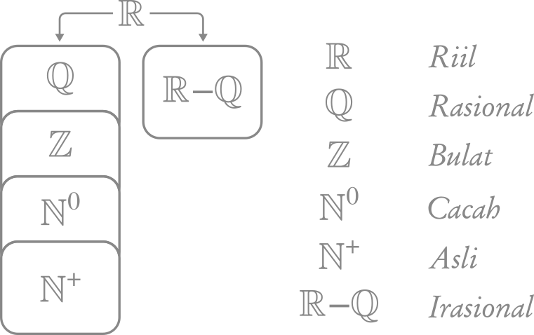

Angka & Himpunan
Angka
Di saat saya menyebut kata "angka" atau "bilangan", mungkin secara spontan anda akan memikirkan angka-angka seperti 1, 2, 3, 4, 5, dan seterusnya, yang biasa kita sebut dengan angka positif, yang mana mereka adalah angka yang lebih besar daripada 0. Atau mungkin bisa juga anda akan terpikir angka 0, 1, 2, 3, dan seterusnya.
Namun, bisa jadi juga kita tidak terpikir (secara spontan) bahwa ternyata ada angka lain seperti angka negatif (angka yang lebih kecil dari 0. Misal, -7), pecahan (misal \(\frac{43}{11}\)), desimal (misal, 0.8) atau juga bilangan akar (misal, \(\sqrt{36}\)).
Untuk mengingat ulang angka-angka tersebut, kita akan memulainya dari Bilangan Riil.
Himpunan Angka
Hampir sebagian besar angka yang anda gunakan sepanjang pelajaran matematika dari SD, SMP, bahkan SMA menggunakan bilangan riil.

Bilangan riil \((\mathbb{R})\) terbagi menjadi dua, yaitu bilangan rasional dan bilangan irasional.
Bilangan rasional \((\mathbb{Q})\) adalah bilangan yang berupa pecahan. Contohnya, \[ \frac{11}{11}, \frac{69}{96}, -\frac{6}{7}, \frac{100}{2}, ... \]
Simbol \(\mathbb{Q}\) diberikan oleh Peano (matematikawan berdarah Italia) karena bilangan rasional merupakan hasil bagi dari sebuah angka terhadap angka lainnya, yang di dalam bahasa Italia disebut dengan Quoziente.
Angka desimal yang memiliki akhir ataupun desimal yang berulang, mereka juga adalah bilangan rasional. \[ -1.75, 0.123123, 0.666, 6.9, ... \]
Bilangan bulat \((\mathbb{Z})\) atau yang biasa dikenal sebagai Integer (diambil dari bahasa Latin, yang berarti "Whole" dalam bahasa Inggris atau "Utuh" dalam bahasa Indonesia) merupakan anggota bilangan rasional yang bisa dituliskan tanpa menggunakan bentuk pecahan. Anggota himpunannya adalah angka yang sebelumnya kita pikirkan (0, 1, 2, 3, 4, ...) dan juga bilangan negatif. Sehingga, inilah anggota himpunan bilangan bulat:
\[ ..., -4, -3, -2, -1, 0, 1, 2, 3, 4, ... \]
Simbolnya dilambangkan dengan \(\mathbb{Z}\) karena kata "Angka" di dalam bahasa Jerman adalah Zahlen.
Bilangan cacah \((\mathbb{N^0})\) adalah anggota bilangan bulat tanpa bilangan negatif (bilangan 0 dan bilangan positif). Sehingga inilah anggotanya:
\[ 0, 1, 2, 3, 4, ... \]
Sebenarnya, bilangan cacah di dalam bahasa Inggris adalah whole numbers dan dilambangkan dengan \(\mathbb{W}\). Namun, saya pribadi kurang menyukai penggunaannya karena penamaannya persis dengan Integer (yang artinya juga "whole" dari bahasa Latin). Oleh karenanya saya lebih suka menulisnya dengan simbol \(\mathbb{N^0}\). \(\mathbb{N}\) sendiri artinya "natural". Maka, arti dari \(\mathbb{N^0}\) adalah bilangan natural dengan nol.
Bilangan asli \((\mathbb{N^+})\) adalah anggota bilangan cacah tanpa nol (semuanya adalah angka positif). Anggotanya adalah:
\[ 1, 2, 3, 4, ... \]
Terkadang bilangan asli menggunakan simbol \(\mathbb{N}\) saja, karena ia disebut sebagai bilangan natural (meskipun saya pribadi lebih suka menggunakan simbol \(\mathbb{N^+}\)). Disebut natural karena ia adalah bilangan yang secara natural kita pahami saat pertama kali kita mempelajari angka-angka saat kita masih kecil/menginjak SD/mulai belajar berhitung. Itu sebabnya pula terkadang ia disebut sebagai "counting numbers" dalam bahasa Inggris.
Di luar sana, di saat kita menyebut bilangan asli/natural \((\mathbb{N})\), maka akan ada dua versi. Versi pertama, yaitu bilangan natural tanpa 0. Dan yang kedua, bilangan natural dengan 0. Versi pertama biasanya digunakan oleh matematikawan pada umumnya. Sedangkan matematikawan dari cabang lainnya (misalnya, Set Theorist) dan juga Logician menggunakan versi yang kedua. Inilah sebabnya mengapa saya pribadi lebih suka menggunakan \(\mathbb{N}^0\) untuk menggantikan \(\mathbb{W}\) dan menggunakan \(\mathbb{N}^+\) untuk menggantikan \(\mathbb{N}\).
Bilangan irasional \((\mathbb{R-Q})\) adalah semua bilangan riil \((\mathbb{R})\) yang tidak bisa dituliskan dalam bentuk pecahan. JIka kita mengubahnya ke desimal, ia akan berlanjut tanpa henti. Contoh dari bilangan irasional adalah \(\pi\) dan \(\sqrt(2)\).
\[ \pi = 3.141592653589793238462643383279502884197169399375105820974... \] \[ \sqrt{2} = 1.414213562373095048801688724209698078569671875376948073176... \]
Bilangan irasional disimbolkan sebagai \(\mathbb{R-Q}\) karena anggotanya adalah semua anggota dari himpunan \(\mathbb{R}\) yang bukan anggota dari himpunan \(\mathbb{Q}\).
Notasi Himpunan
Di atas, kita telah membicarakan tentang himpunan angka. Namun kita juga bisa membuat himpunan lain selain himpunan angka. Contohnya, kita bisa mendeskripsikan Himpunan Binatang seperti berikut.
\[ Binatang = \{ Ayam, Beruang, Cicak, Domba, Elang \} \]
atau juga mendeskripsikan Himpunan nama-nama negara anggota ASEAN.
\[ Negara Anggota ASEAN = \{ Indonesia, Malaysia, Brunei, Thailand \} \]
Kita umumnya menggunakan kurung kurawal untuk "mengurung" anggota-anggota dari sebuah himpunan. Jadinya, dengan menggunakan simbol yang kita pelajari pada himpunan angka, kita pun dapat menulis semua bilangan asli menggunakan notasi himpunan dengan cara sebagai berikut.
\[\mathbb{N^+} = \{ 1, 2, 3, 4, 5, 6, 7, ... \} \]